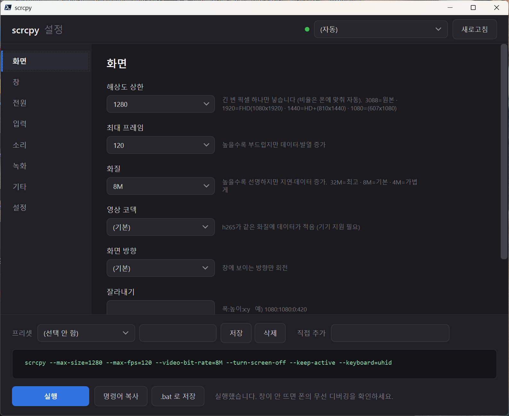

ROUTE 01추천
설정 GUI에서
공식 ZIP 설치
scrcpy-gui.bat를 열고 왼쪽 설정 탭에서 공식 최신 버전 설치를 누르세요. Genymobile의 GitHub Releases만 조회하며, 다운로드 전 출처·버전·용량·SHA-256·설치 경로를 보여줍니다.
WINDOWS 10 / 11 · OFFICIAL-ONLY FLOW
이 안내는 scrcpy 설정 GUI에서 공식 scrcpy를 안전하게 설치하고, 원하는 경로에 보관한 뒤 무선으로 연결하는 가장 짧고 검증 가능한 흐름입니다.
01 / INSTALL ROUTE
처음이라면 GUI 안의 공식 최신 버전 설치가 가장 간단합니다. 이미 명령줄 설치를 선호한다면 공식 Windows 문서가 안내하는 패키지 관리자도 사용할 수 있습니다.
scrcpy-gui.bat를 열고 왼쪽 설정 탭에서 공식 최신 버전 설치를 누르세요. Genymobile의 GitHub Releases만 조회하며, 다운로드 전 출처·버전·용량·SHA-256·설치 경로를 보여줍니다.
공식 릴리스에서 Windows 64-bit ZIP을 받은 뒤 원하는 폴더에 풀고, GUI의 찾아보기에서 scrcpy.exe 또는 adb.exe를 지정하세요. GUI는 후보 중 가장 높은 버전을 선택합니다.
02 / GUIDED INSTALL
설치 과정은 scrcpy를 실행하지 않습니다. 모든 준비가 끝난 뒤에만 하단 실행 버튼으로 폰 연결을 시작합니다.
scrcpy-gui.bat를 실행하고 왼쪽 설정을 선택합니다.
다운로드 목록이나 URL을 직접 입력하지 않습니다. GitHub의 공식 릴리스만 사용합니다.
아래 기본 경로를 그대로 쓰거나, 드라이브·폴더를 직접 선택합니다.
버전, ZIP 파일명, 출처, SHA-256, 용량과 최종 경로를 확인하고 예를 누릅니다.
해시가 맞을 때만 안전한 경로로 압축을 풀고, 실행 파일 경로를 다음 실행에도 기억합니다.
버전별 새 폴더에 설치합니다. 기존 설치를 덮어쓰지 않습니다.

--turn-screen-off --keep-active 조합이 표시됩니다.03 / TRUST, THEN RUN
GUI 설치는 승인 전에 공식 릴리스가 제공한 SHA-256을 보여주고 다운로드 파일과 대조합니다. 수동으로 ZIP을 받았다면 Windows에서도 같은 값을 직접 확인할 수 있습니다.
PS> Get-FileHash .\scrcpy-win64-v4.1.zip -Algorithm SHA256 Algorithm Hash Path --------- ---- ---- SHA256 <GitHub Releases에 표시된 공식 SHA-256> .\scrcpy-win64-v4.1.zip PS> .\scrcpy.exe --version scrcpy 4.1
04 / WIRELESS PAIRING
Android 11 이상에서는 무선 디버깅 페어링을 한 번 완료하면 이후 adb devices가 mDNS로 기기를 자동 발견합니다.
폰 설정을 바꾸는 단계입니다. 개발자 옵션과 무선 디버깅을 직접 켜는 데 동의한 경우에만 진행하세요.
공식 scrcpy 배포판에는 일반적으로 adb가 함께 포함됩니다. 페어링을 마친 뒤에는 별도 adb connect가 필요 없습니다.
PS> adb pair 192.168.0.5:41234 123456 PS> adb devices List of devices attached <자동 발견된 기기> device
adb tcpip 5555 고정 포트 방식은 안내하지 않습니다. 무선 디버깅 포트는 재접속마다 바뀔 수 있고, USB가 필요해질 수 있습니다.05 / PRIMARY SOURCES
릴리스 버전과 SHA-256은 바뀔 수 있으므로, 설치 전에는 항상 아래의 공식 최신 릴리스 페이지를 기준으로 확인합니다. 이 안내를 조회한 시점의 최신 정식 릴리스는 v4.1입니다.